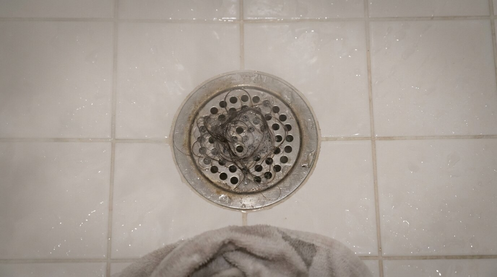

The Night I Almost Started Finasteride (And What I Did Instead)
Three years on Minoxidil. One midnight Reddit spiral. And the follicle science that finally made the dependency make sense — and gave me a way out.
Written by a former Minoxidil user
Independent writer · 3-year hair loss research journey
I want to tell you about a Tuesday night in March, about two years into my Minoxidil routine. I was sitting on the edge of my bed at 11:40pm, phone in hand, reading a Reddit thread I'd already half-read twice before. The thread was called something like "How did you finally get over your fear of Finasteride?" It had 847 comments. I was on comment 200-something.
My Minoxidil bottle was on the nightstand. Half empty. There was a ring stain on the wood underneath it from months of the same placement, same routine, same quiet resignation.
I wasn't reading the thread because I wanted to start Finasteride.
I was reading it because I was exhausted. Exhausted from the routine. Exhausted from the greasy scalp two hours after application. Exhausted from the shedding phase that had convinced me, for about three panicked weeks, that I'd made everything dramatically worse. Exhausted from knowing — really knowing — that if I stopped the bottle on my nightstand, I would lose whatever ground I'd gained.
That's not a treatment. That's a hostage situation.
And the worst part? I wasn't even unhappy with my results. My hair had stabilized. Maybe slightly improved. But every morning and every night, I was paying rent on those results. And the lease had no end date.
So there I was, reading about Finasteride. Not because I wanted to. Because I felt like I was running out of road.
What Nobody Tells You About the Minoxidil Dependency
Here's the thing they don't explain clearly when you start Minoxidil.
It works — for a lot of people, it genuinely works — by forcing your hair follicles into the growth phase through vasodilation. More blood flow, more nutrients, follicles that were quietly shutting down get a temporary reprieve. That's the mechanism. It's real. It's why it has decades of data behind it.
But here's the part buried in the fine print:
The moment you stop, the mechanism stops. Your follicles don't remember what they learned. There's no lasting change to the follicle environment. You were essentially keeping the lights on with a generator — the moment you unplug it, the room goes dark. Often faster and harder than it went dark the first time.

This is why stopping Minoxidil can feel, as one person described it, like "watching everything collapse."
It's also why the question I kept Googling — "how do I stop Minoxidil without losing my hair" — had no satisfying answer. Because the answer, inside that system, genuinely doesn't exist.
The Core Problem
You either stay on it forever, or you accept the shed. That false binary is what had me reading Finasteride horror stories at midnight.
The Thing That Shifted My Thinking
A few weeks after that Tuesday night, I came across something that reframed the entire problem for me.
Not a product. A mechanism.
A researcher I stumbled across in a deep forum thread made a point I hadn't seen articulated clearly before. He wasn't talking about DHT. He wasn't talking about blood flow. He was talking about something earlier in the process — something upstream of both.
He was talking about the follicle environment.
The reason people keep losing hair — even people doing everything right, even people on Minoxidil, even people who've invested thousands in laser devices — often isn't simply DHT or blood flow in isolation.
It's that the scalp environment itself becomes increasingly hostile to follicle survival over time.
The Silent Breakdown
- → Shortened growth cycles
- → Chronic low-grade inflammation
- → Oxidative stress accumulating at the follicle level
- → Declining microcirculation that vasodilation can't fully fix
- → Gradual follicle miniaturization — which, untreated, becomes permanent
Most treatments address the symptoms of this process. Very few address the environment that's driving it.
This is why someone can spend years on Minoxidil, see decent results, stop — and watch the hair disappear faster than it came. The underlying environment was never stabilized. The treatment was renting results, not building them.
And it immediately raised a different question:
What would it look like to actually support the follicle environment, instead of just overriding it?
The Problem With Most "Natural Alternatives"
Before I tell you what I found, I need to address something.
Because if you've spent any real time in the hair loss space, you already know the graveyard.
Rosemary oil. Pumpkin seed capsules. Biotin megadoses. Castor oil. Saw palmetto. The $340 supplement with the celebrity endorsement and the clinical study funded entirely by the company that makes it.
The Graveyard
- A good marketing story
- A before/after photo
- A celebrity discount code
- A study funded by the brand itself
What Actually Works
- A plausible biological mechanism
- Independent clinical data
- Therapeutic ingredient concentrations
- No hormonal interference
Redensyl falls in the first category. So does Capixyl — a biomimetic peptide complex that works on the DHT sensitivity of the follicle without touching systemic hormones. So does Adenosine, which has demonstrated growth phase extension in clinical settings. So do Copper Peptides, which support scalp tissue repair and follicle signaling at the cellular level.
What I was looking for was a formulation that combined these compounds — at therapeutic concentrations, not cosmetic trace amounts — in a single leave-on topical I could integrate into a daily routine without a greasy scalp or a forty-minute application window.
That search is what led me to the iRESTORE Scalp Serum.
Why This Formulation Specifically
I want to be honest about my initial reaction, because it's probably similar to yours.
iRESTORE is primarily known for their laser devices. When I first saw they had a serum, my immediate thought was: upsell.
The thing that changed my mind wasn't the branding. It was the ingredient panel.
Redensyl — 3%
Therapeutic concentration. Activates follicle stem cells. Clinical results comparable to 5% Minoxidil for hair density — without the dependency mechanism.
Capixyl — 2%
Biomimetic peptide complex. Works on DHT sensitivity at the follicle level — without touching systemic hormones. No sexual side effects. No libido risk.
Adenosine
Demonstrated growth phase extension in clinical settings. Keeps follicles in the anagen phase longer — more time growing, less time resting or shedding.
Copper Peptides + Biotin
Scalp tissue repair and follicle signaling at the cellular level. Biotin for strand integrity and resilience. The environmental support layer most routines are missing.
This is a formulation built around the mechanism, not around the marketing story. After enough time reading ingredient panels, you can tell the difference.
What the First 90 Days Actually Looked Like
Days 1–30 — Almost Nothing Visible
The scalp felt different. Less irritated. A low-grade itchiness I'd normalized for years was quieter. I also noticed I wasn't dreading my morning routine. The serum absorbed cleanly. No residue. I applied it, gave it ninety seconds, and moved on. Compliance is everything with topical treatments — and anything that makes daily application effortless dramatically increases the chances you actually do it for the months it takes to see follicle-level results.
Days 45–60 — Something Shifted
Around week seven or eight, I noticed something in the shower. The hair on the wall — the count I'd been doing involuntarily every single morning for three years, the one I tried to tell myself I wasn't doing — was different. Not dramatically. Not overnight. But the volume was down. Meaningfully down. Reduced shedding means the follicles that are active are staying active longer. It's not regrowth of lost ground. It's protection of existing ground. For someone whose primary goal was "I just want to keep what I still have" — that is the whole game.
Day 90 — Where I Actually Stand
My hair has not dramatically transformed. I have not regrown my 22-year-old hairline. Anyone who promises you that from a topical serum alone is either lying or selling something designed for people who don't do their research. What I can tell you: the density at my crown looks and feels different. Fuller. Less transparent in harsh lighting. The shedding is consistently lower. And I am not on a drug. I am not suppressing a hormone. I am not owned by a bottle.
That's not a miracle story. It's a maintenance story. And for anyone who has ever Googled "how do I stop Minoxidil without losing everything" at midnight — a maintenance story that actually holds is worth more than a miracle story that falls apart the moment you stop.
Who This Is Actually For
Early to mid-stage thinning
You still have active follicles worth protecting. This formulation is not going to rebuild ground that's already gone — but it's most powerful when there's still something to protect.
Currently on Minoxidil and hating the dependency
This isn't a guaranteed swap, and any transition requires thought. But it's the most credible non-pharmaceutical support layer I've found for someone building toward an exit from that dependency cycle.
iRESTORE laser device owners
The LLLT mechanism — ATP production, microcirculation, growth phase extension — works in direct synergy with what Redensyl and Adenosine are doing at the follicle level. You're not doubling up. You're covering different parts of the same biological problem.
Prevention-focused buyers who've noticed early thinning
This is where topical follicle support has the highest ceiling. The earlier you stabilize the environment, the more you have to protect. Prevention is smarter than rescue — every time.